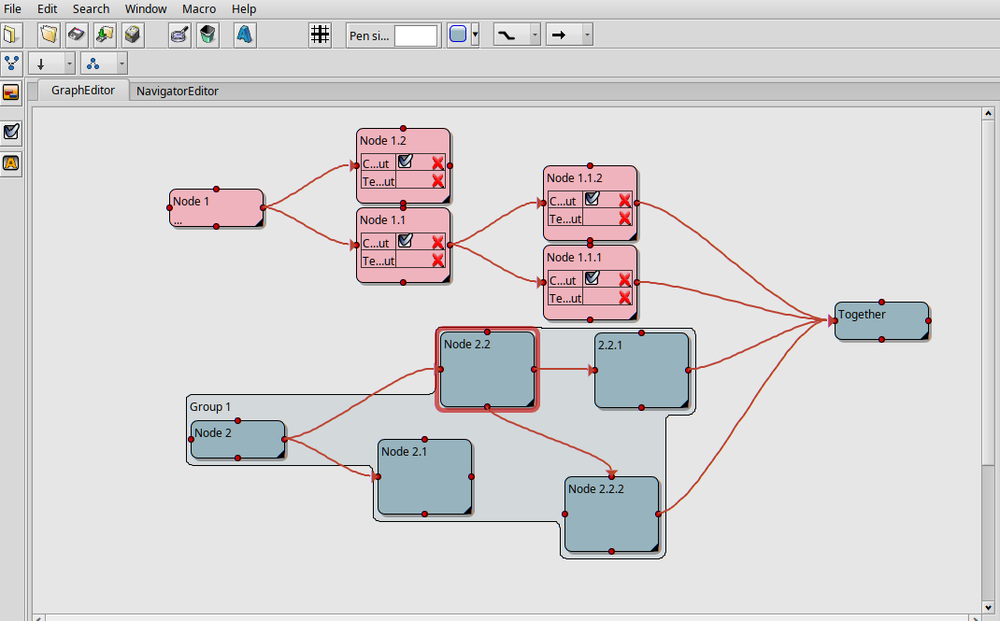
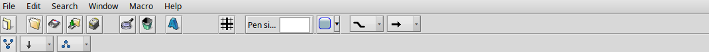
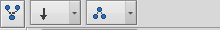
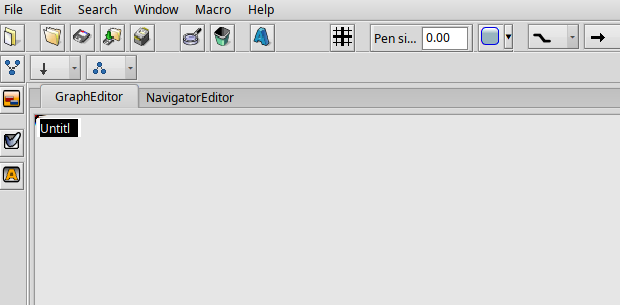
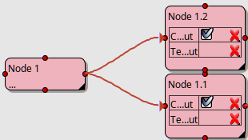
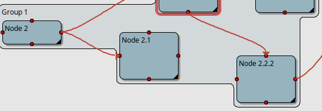
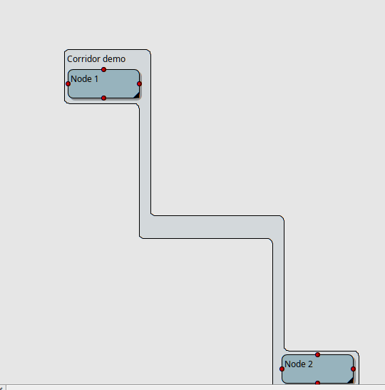

ProjectConceptor is a graph editor for Haiku: nodes, attributes and connections, groupable, with automatic layout. This guide walks through the main workflows using screenshots of a running instance.


Left to right: file actions (New, Open, Save, Print), then edit/delete, then three node tools (add a group, add a boolean attribute, add a text attribute), grid toggle, pen size, fill color, and on the right two icon choice fields:
Both show the currently picked shape as an icon; the pop-up menu also carries the name, in case the icon alone isn't clear enough.
Below that, a second toolbar row, visible while the GraphEditor tab is active:

Double-clicking an empty spot in the GraphEditor creates a new node and immediately puts its name into edit mode:

Type a name, done. Double-clicking inside an existing group instead adds the new node as a child of that group directly.
Any node can carry its own attribute rows — added to the selected node via the two toolbar icons ("add boolean attribute" / "add text attribute"):

Each row has a checkmark icon (toggle the value) and a red cross (remove the row).
Dragging from one of a node's four red connection points to another node creates a connection between them. Its shape and arrow ends can be changed afterward via the toolbar icons above, as long as the connection is selected (works on several at once).
Select several nodes, then click the group icon in the toolbar. The group draws itself as one connected shape that hugs its children tightly — even when they're different sizes or don't line up at the same height:

The shape grows automatically as a child moves or a new one is added, and shrinks back just as readily when a child is removed. Double-clicking the group's own area adds a new child node to it directly (see above).
A freshly created group defaults to just a faint tint with no drop shadow — like any node, its fill color can be set to something solid via the toolbar's fill color control.
If two children don't overlap vertically at all — one sitting entirely above the other — the group connects them with a short, fixed-width corridor instead of stretching a single shape across the gap:

The leftmost icon of the second toolbar row (see above) rearranges the whole graph — useful after inserting many nodes by hand, which tend to overlap. Direction and topology can be set first via the two fields next to it.
.pcd file.